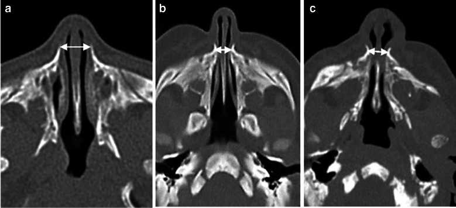
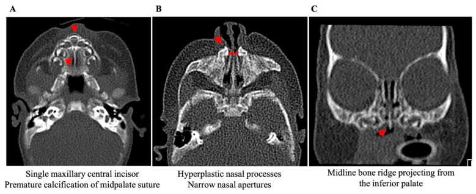
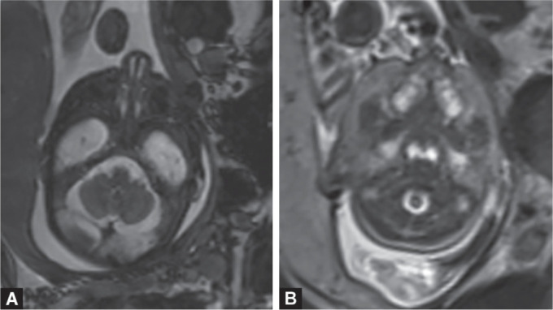

1972 — Hẹp lỗ hình lê bẩm sinh / Congenital nasal pyriform aperture stenosis (CNPAS)
Tags: pattern:hep-bam-sinh pattern:hep-mui-truoc pattern:ngat-mui-so-sinh pattern:rang-giua-doc-nhat vung:mui vung:xuong-mat vung:dau-co score:PA-width protocol:CT-xuong-lat-1mm protocol:MRI-so-nao
Mức chắc chắn (certainty): tổng hợp y văn (literature synthesis) — dựng từ một nghiên cứu 3D-CT 22 trẻ sơ sinh có thuật toán tự động (PMC12321926), một phân tích gộp 320 ca (Ensing 2025, chỉ đọc phần tóm tắt có số), một loạt 4 ca cùng kích thước khác diễn tiến (PMC9705134), một tổng quan điều trị 25 bài + 4 ca (PMC11854878) và hai ca lâm sàng có ảnh CT (PMC10498658, PMC11008318). Không có thử nghiệm ngẫu nhiên nào trong bệnh này; mọi ngưỡng điều trị đều là loạt ca, chỗ suy luận được ghi rõ.
Câu chốt: Lỗ hình lê (pyriform aperture) là cửa xương hẹp nhất của đường thở mũi, và ở trẻ sơ sinh — đứa trẻ bắt buộc thở mũi — chỉ cần hẹp thêm vài mm là đủ gây ngưng thở. Ba con số quyết định: (1) trẻ đủ tháng bình thường rộng 11,8 ± 0,8 mm (đo tự động) / 11,46 ± 1,09 mm (đo tay), nên < 11 mm là ngưỡng chẩn đoán; (2) trong 320 ca gộp, 74,2% được mổ, nhưng đường kính nhóm chỉ điều trị nội khoa (5,3 ± 1,6 mm) không khác nhóm mổ (5,1 ± 1,5 mm; chênh 0,2 mm, KTC 95% −0,4 đến 0,7) — đường kính dùng để chẩn đoán, KHÔNG dùng để tiên lượng; (3) yếu tố quyết định mổ là triệu chứng: ngưng thở aOR 9,1 (KTC 95% 2,4–35) và stridor/thở rít aOR 3,9 (1,4–10,8).
1. Tổng quan bệnh học – cơ chế hình ảnh (TẠI SAO)
1.1 Giải phẫu: hẹp ở xương, không phải ở màng
- Lỗ hình lê là cửa vào xương của mũi, hình quả lê: trên là xương mũi, dưới là chỗ tiếp giáp mảnh ngang xương hàm trên với gai mũi trước, hai bên là mấu mũi của xương hàm trên (nasal process of the maxilla).
- Cơ chế kinh điển (Brown 1989): quá sản và cong vào trong của mấu mũi xương hàm trên → hẹp lòng xương, không có màng chắn. Vì vậy tổn thương không đáp ứng với thuốc co mạch và không nhìn thấy bằng đèn soi mũi thông thường — phải chụp cắt lớp.
- Hệ quả giải phẫu đi kèm (cùng một “sự cố” đường giữa): khẩu cái tam giác, gờ xương giữa mặt dưới khẩu cái cứng (midline inferior palatal ridge), răng cửa giữa độc nhất (solitary median maxillary central incisor — SMMCI).
1.2 TẠI SAO hẹp vài mm lại thành cấp cứu: vật lý dòng khí
- Trẻ sơ sinh bắt buộc thở mũi trong khoảng 4–6 tháng đầu (chỉ thở miệng khi khóc). Mọi cản trở mũi vì thế là cản trở đường thở chính, không phải “nghẹt mũi”.
- Trở lực đường thở theo định luật Hagen–Poiseuille: R ∝ 1/r⁴. Khi bán kính giảm từ 11,8 mm xuống 4,7 mm (tỷ lệ 2,5 lần), diện tích giảm ~6,3 lần nhưng trở lực tăng ~40 lần (2,5⁴ ≈ 39,7). Đó là lý do 5 mm không phải “hẹp nhẹ” mà là tắc nghẽn sinh lý.
- Hệ quả lâm sàng kinh điển: tím tái từng cơn, giảm khi khóc (khóc = chuyển sang thở miệng), ngưng thở khi bú (vừa bú vừa thở mũi không được), sặc, chậm tăng cân; nặng hơn là thiếu oxy não do các cơn ngưng thở lặp lại.
1.3 TẠI SAO CT xương là chuẩn: tương phản xương – khí
- Xương vỏ 600–1.000 HU trở lên, khí trong mũi ≈ −1.000 HU → trên cửa sổ xương (WW ~2.000, WL ~400) bờ mấu mũi hiện trắng đục, sắc nét, đo được tới 0,1 mm mà không cần cản quang. Mô mềm/màng nhầy 30–60 HU vì thế không thể giải thích một lòng mũi hẹp 4 mm.
- Mặt cắt chuẩn: ngang, qua ống mũi dưới (inferior meatus), đo đường vuông góc giữa hai bờ trong mấu mũi xương hàm trên. Cùng mặt phẳng đó còn thấy răng cửa giữa độc nhất và gờ khẩu cái — ba dấu hiệu của cùng một phổ bệnh.
- Vì sao cần 3D: trên 22 trẻ, đường kính lỗ hình lê không phân biệt được thể vừa với thể nặng (4,5 ± 0,9 vs 4,4 ± 1,4 mm, p = 0,30), nhưng diện tích cắt ngang ở 75% chiều dài mũi giữa thì phân biệt rõ (68,6 ± 7,5 vs 33,5 ± 13,7 mm², p < 0,01). Nghĩa là: hẹp khu trú ở cửa mũi = thể vừa; hẹp lan suốt 3/4 ống mũi = thể nặng.
1.4 Số liệu định lượng nền (đo trên CT, trẻ 0–35 ngày)
| Nhóm | Đường kính lỗ hình lê – tự động (mm) | Đo tay (mm) | Diện tích cắt ngang tại 75% (mm²) |
|---|---|---|---|
| Bình thường (n = 12) | 11,8 ± 0,8 | 11,46 ± 1,09 | — |
| Hẹp thể vừa – điều trị nội khoa (n = 4) | 4,5 ± 0,9 | 4,98 ± 0,63 | 68,6 ± 7,5 |
| Hẹp thể nặng – phải mổ (n = 6) | 4,4 ± 1,4 | 4,67 ± 1,28 | 33,5 ± 13,7 |
- Dịch tễ: ≈ 1/25.000 trẻ sinh sống (so với hẹp/mất sản choana ≈ 1/8.000); thể đơn độc chỉ 20%, còn lại nằm trong dị tật đường giữa.
- Răng cửa giữa độc nhất gặp 25% (1/4) thể vừa và 33,3% (2/6) thể nặng trong loạt 10 ca trên; ngược lại, gần 90% trẻ có răng cửa giữa độc nhất có dị tật đường giữa bẩm sinh — nên thấy răng này là phải đi tìm hội chứng.
- Bất thường tuyến yên được báo cáo ở 40% bệnh nhân trong một tổng quan; loạt 4 ca có 3/4 mẹ đái tháo đường thai kỳ (yếu tố liên quan được nhắc nhiều lần, cơ chế chưa rõ).
- Một chi tiết dễ bỏ: trong hẹp lỗ hình lê, thể tích vòm mũi hầu lớn hơn khoảng 1/3 so với trẻ bình thường — giãn bù trừ phía sau chỗ hẹp. Đừng vì “mũi sau rộng” mà loại trừ hẹp mũi trước.
2. Mẫu hình + chẩn đoán phân biệt theo vị trí (Gamut)
Ngạt mũi sơ sinh luôn định khu theo 5 tầng từ trước ra sau — nhớ chuỗi “Xương – Sụn – Vách – Lệ – Choana”:
- Tầng 1 – xương mũi trước: hẹp lỗ hình lê bẩm sinh (bài này), hẹp do sẹo/chấn thương, u xương lành tính (rất hiếm).
- Tầng 2 – van mũi/sụn: hẹp van mũi, bất sản cánh mũi (alar agenesis), hẹp sụn do dị tật khe mặt (Tessier).
- Tầng 3 – vách: lệch vách, tụ máu vách mũi sau chấn thương sinh, hẹp do ống thông/đặt nội khí quản kéo dài.
- Tầng 4 – đường lệ: nang ống lệ – túi lệ (dacryocystocele) ở sơ sinh — khối xanh tím dưới góc mắt trong, thường một bên.
- Tầng 5 – mũi sau: hẹp/mất sản choana (xương ~90%, hỗn hợp/màng phần còn lại), hẹp mũi sau, thoát vị não – màng não (encephalocele).
Hội chứng kèm theo (khi thấy bất thường đường giữa):
- Phổ holoprosencephaly / SMMCI — đột biến SHH, biểu hiện nhẹ nhất là một răng cửa giữa; nặng hơn: khuyết sọ mặt, bất thường tuyến yên, chậm phát triển.
- CHARGE (bài 1951) — chủ yếu gây hẹp/mất sản choana, không phải hẹp lỗ hình lê; nhưng cả hai cùng nằm trong gamut “ngạt mũi sơ sinh hai bên”.
- Loạn sản giữa mặt (achondroplasia, Apert, Binder) — hẹp lỗ hình lê kèm hàm trên lùi; xử trí theo bệnh nền.
Câu hỏi phân biệt gọn nhất ở giường: ống thông mũi 5–6 Fr dừng ở đâu? Dừng ngay lỗ mũi = tầng 1–2; dừng sâu 3–4 cm = tầng 5 (choana). Nhưng đừng coi “ống 5 Fr qua được” là bình thường: ca điển hình vẫn qua 5 Fr mà không qua 6 Fr.
3. Bảng so sánh phân biệt (ma trận đối chiếu)
| Thực thể (entity) | Hình ảnh điển hình | Chốt vào (rule-in) | Chốt loại (rule-out) | Gợi ý xác nhận |
|---|---|---|---|---|
| Hẹp lỗ hình lê (CNPAS) | CT ngang qua ống mũi dưới: lỗ hình lê 4–7 mm, mấu mũi xương hàm dày, cong vào trong, khẩu cái tam giác, gờ giữa khẩu cái, SMMCI | PA < 11 mm ở trẻ đủ tháng + choana thông + không có màng | PA ≥ 11 mm, hoặc hẹp do màng/mô mềm → không phải CNPAS | Đo lại đúng bình diện, cửa sổ xương; nội soi kiểm tra |
| Mất sản/hẹp choana | Màng hoặc xương chắn sau ổ mũi, dày ≤ 1 cm, vách lá mía bên dày | Ống 6 Fr không tới được vòm hầu; choana đặc trên CT | Ống tới hầu + choana thông hoàn toàn | Nội soi mũi sau + CT |
| Nang túi lệ (dacryocystocele) | Khối mô mềm giữa cuốn dưới và thành mũi bên, bờ tròn, không phá xương | Khối dưới góc mắt trong, chảy nước mắt, ấn ra mủ | Lỗ hình lê rộng bình thường → loại CNPAS | Siêu âm/CT mô mềm |
| Tụ máu/lệch vách | Vách dày hình thoi, lệch sang bên | Tiền sử chấn thương sinh, sưng nề | Lỗ hình lê ≥ 11 mm | Nội soi mũi |
| Thoát vị não – màng não mũi | Khối mô mềm có cuống, khiếm khuyết xương sàng/mũi, có thể thấy mô não | Liên tục với nội sọ trên MRI | Không có khiếm khuyết xương → loại | MRI trước mọi can thiệp |
| Loạn sản giữa mặt | Hàm trên lùi, lỗ hình lê hẹp nhưng toàn bộ khối mặt bất thường | Bệnh nền xương – sụn đã biết | Hẹp PA đơn độc, phần còn lại bình thường | Phim sọ mặt, tư vấn đa chuyên khoa |

Ba trẻ sơ sinh, cùng bình diện ngang qua lỗ hình lê, mũi tên hai chiều = đường kính. (a) 11 mm; (b) 4,7 mm nhưng chỉ cần nội khoa; (c) 6,7 mm nhưng phải mổ vì ngưng thở. Nguồn: Yeshua T và cs, Pediatr Radiol 2025, PMC12321926, Hình 2, CC BY 4.0 — nguyên bản, không chỉnh sửa.Ba dấu hiệu “cùng một phổ bệnh” trên CT

(A) một răng cửa giữa xương hàm trên + vôi hóa sớm đường khớp giữa khẩu cái; (B) mấu mũi xương hàm quá sản, lỗ mũi hẹp; (C) gờ xương giữa nhô ra từ mặt dưới khẩu cái. Nguồn: Emodi O và cs, Children (Basel) 2025, PMC11854878, Hình 3, CC BY 4.0 — nguyên bản.- SMMCI nằm ngay trên đường giữa, chỉ thấy khi cửa sổ xương và lát cắt đi qua xương ổ răng — cuộn hết khối dữ liệu, đừng chỉ nhìn 3 lát “đẹp”.
- Gờ khẩu cái là dấu hiệu rất đặc hiệu nhưng dễ bị bỏ vì nằm ở mặt dưới khẩu cái, cần tái tạo đứng (coronal) mới thấy rõ.
4. Protocol chụp + hệ phân độ & thuật toán điều trị
4.1 Protocol CT mũi xoang sơ sinh (ALARA)
- Không cản quang, cửa sổ xương, lát 0,6–1 mm, chồng lát 0,33–0,75 mm, tái tạo axial + coronal + sagittal, pixel 0,2–0,4 mm; FOV từ trần sọ tới hàm dưới (để không bỏ sót thoát vị não/bất thường nội sọ).
- Thông số liều tham chiếu từ loạt 22 trẻ: 70–100 kV, 40–190 mA, CTDIvol 1,5–11,4 mGy. Luôn ghi DLP/CTDIvol vào phiếu để theo dõi liều tích lũy ở trẻ phải chụp lại.
- Đo đường kính lỗ hình lê tại ống mũi dưới, vuông góc với trục mũi; ghi mm tới 0,1. Nếu có công cụ 3D: đo thêm diện tích cắt ngang tại 25/50/75% chiều dài mũi giữa — đây là biến phân biệt vừa/nặng.
- Khi có SMMCI/gờ khẩu cái → MRI sọ + vùng tuyến yên và xét nghiệm nội tiết (hạ đường huyết, cortisol, FT4), vì bất thường tuyến yên được báo cáo tới 40%.
- Không dùng MRI để chẩn đoán hẹp xương; MRI dành cho mô mềm, thoát vị não, tuyến yên.
4.2 Phân độ & ngưỡng: đường kính để chẩn đoán, triệu chứng để quyết định
| Mức | Tiêu chí | Hướng xử trí | Bằng chứng |
|---|---|---|---|
| Chẩn đoán | PA < 11 mm (trẻ đủ tháng) | Xác nhận CNPAS, tìm dị tật phối hợp | Ngưỡng kinh điển, lặp lại ở 4 nguồn |
| Thể nhẹ – vừa | PA ≥ 6 mm, bú được, không ngưng thở | Nội khoa: nước muối, hút mũi, núm vú McGovern (núm có lỗ lớn làm “đường thở miệng”), điều trị trào ngược | Thành công 80–90% (tổng quan 25 bài) |
| Thể nặng | Tím tái từng cơn, ngưng thở, giảm bão hòa dù đã nội khoa; PA thường < 6 mm | Mổ mở rộng lỗ hình lê (đường dưới môi hoặc nội soi), đặt stent mũi 5 ngày–4 tuần | Thành công 85–100% (chỉ định vàng) |
| Thể nặng, chọn lựa khác | Hẹp 5–7 mm, không tím tái | Nong Hegar/bóng, RME (nới rộng hàm, 15–20 ngày), iSARPE | Nong bóng ~75%; iSARPE ~87% |
| Theo dõi dài hạn | Trẻ lớn 10–12 tuổi | Đánh giá đa ký giấc ngủ + chỉnh nha, cân nhắc SARPE, phục hình răng cửa | Thuật toán theo tuổi (2025) |
Ba con số phải nhớ khi hội chẩn: hẹp < 6 mm + triệu chứng nặng → mổ (85–100% thành công); hẹp ≥ 6 mm không triệu chứng → thử nội khoa (80–90% thành công); và đường kính một mình không dự báo ai cần mổ (chênh 0,2 mm, không có ý nghĩa).
flowchart TD
A[Trẻ sơ sinh ngạt mũi hai bên, tím khi bú] --> B[Thử ống thông mũi 5-6 Fr]
B -->|Dừng ngay lỗ mũi| C[CT mũi xoang không cản quang, lát 1 mm]
B -->|Dừng sâu 3-4 cm| D[Nghi hẹp hoặc mất sản choana]
C --> E{Đường kính lỗ hình lê dưới 11 mm?}
E -->|Không| F[Tìm nguyên nhân khác: nang túi lệ, lệch vách, thoát vị não]
E -->|Có| G[CNPAS - tìm SMMCI, gờ khẩu cái, khẩu cái tam giác]
G --> H{Có ngưng thở, tím tái từng cơn, giảm bão hòa?}
H -->|Không| I[Nội khoa: nước muối, hút mũi, núm McGovern, trị trào ngược]
H -->|Có| J[Mở rộng lỗ hình lê + stent mũi]
G --> K{SMMCI hoặc bất thường đường giữa?}
K -->|Có| L[MRI sọ và tuyến yên + nội tiết + siêu âm bụng]
I --> M[Theo dõi tăng cân, đa ký giấc ngủ khi 10-12 tuổi]
J --> M
5. Biến thể bình thường và cạm bẫy
- Đo sai bình diện là lỗi số 1: đo ở sụn mũi/đầu mũi cho ra 2–4 mm “hẹp nặng” giả; đo ở phần rộng nhất của ổ mũi lại bỏ sót. Luôn ghi rõ “ngang qua ống mũi dưới”.
- Đầu nghiêng làm mặt cắt chéo → lỗ hình lê hẹp giả một bên. Tái tạo lại trục trước khi kết luận bất đối xứng.
- “Choana thông nên không tắc” — sai. Ca điển hình: ống 5 Fr qua được, 6 Fr không, nội soi 2,2 mm không qua, nhưng choana hoàn toàn thông; nguyên nhân nằm ở tầng 1.
- Ngưỡng 11 mm lấy từ trẻ đủ tháng: một trẻ non tháng 1,2 kg có lỗ hình lê 5 mm vẫn điều trị nội khoa thành công và hết triệu chứng sau 26 ngày. Với trẻ non tháng/nhẹ cân, dùng ngưỡng tuyệt đối sẽ mổ oan — phải cân theo tuổi thai và triệu chứng.
- Hai trẻ cùng 4,5–5 mm, một mổ một không (loạt 4 ca: 5,0 / 4,5 / 5,0 / 4,8 mm, chỉ 2 ca mổ): kích thước không phải tiên lượng. Đừng “đọc số rồi kết luận”.
- Bỏ sót hội chứng đường giữa: răng cửa giữa chỉ 25–33% trong loạt hẹp, nhưng khi có thì 90% kèm dị tật đường giữa. Không thấy răng không loại trừ hội chứng; thấy răng buộc phải khảo sát nội sọ và nội tiết.
- Hẹp lại và sẹo dính sau mổ: synechiae sau mổ là biến chứng có thật, có ca phải mổ lại. Stent 5 ngày–4 tuần + nong định kỳ; cha mẹ được dạy nong bằng ống thông 8 Fr tại nhà trong 6 tuần (theo ca đã báo).
- Nhầm với viêm mũi sơ sinh: dùng thuốc co mạch kéo dài ở trẻ nhỏ không giải quyết hẹp xương và che mất chẩn đoán.
- Bẫy “thỏa mãn tìm kiếm”: đã thấy bất thường này (ví dụ hẹp choana một bên) thì vẫn phải đo lỗ hình lê và xem đường giữa — ca ghép trong y văn có hẹp lỗ hình lê một bên + mất sản choana bên đối diện + bất sản cánh mũi.
6. Tự lượng giá — Blind Quiz
Ca 1 — Ba trẻ sơ sinh, ba mặt cắt CT cùng bình diện.
- Bệnh cảnh: cả ba đều ngạt mũi hai bên từ sau sinh; (a) không triệu chứng nặng, (b) và (c) đều được đo đường kính.
- Câu hỏi: (1) Đường kính mỗi trường hợp? (2) Vì sao (b) nhỏ hơn lại chỉ điều trị nội khoa còn (c) lớn hơn phải mổ? (3) Dấu hiệu nào khác trên CT cần tìm?
Bấm để hiện đáp án
- (a) 11 mm — bình thường (trẻ 4 ngày tuổi). (b) 4,7 mm — hẹp, điều trị nội khoa thành công. (c) 6,7 mm — hẹp, phải mổ.
- Vì đường kính là công cụ chẩn đoán, không phải tiên lượng: trong 320 ca gộp, nhóm nội khoa 5,3 mm và nhóm mổ 5,1 mm khác nhau 0,2 mm (không có ý nghĩa). Yếu tố quyết định là ngưng thở (aOR 9,1) và thở rít (aOR 3,9).
- Trên cả ba lát: tìm mấu mũi xương hàm dày cong vào trong, khẩu cái tam giác, gờ giữa khẩu cái, và răng cửa giữa độc nhất ở lát qua xương ổ răng.
- Nguồn: Yeshua T và cs, Pediatr Radiol 2025 (PMC12321926), Hình 2, CC BY 4.0. Ca (b)/(c) là phản biện số liệu: nếu chỉ dựa vào 4,7 < 6,7 mm, ta sẽ chọn sai người mổ.
Ca 2 — Trẻ 3 tháng, ngạt mũi từ nhỏ, CT có bất thường đường giữa.
- Bệnh cảnh: không có tiền sử chấn thương; mẹ đái tháo đường thai kỳ.
- Câu hỏi: (1) Ba dấu hiệu trên CT? (2) Còn thiếu những khảo sát nào trước khi mổ? (3) Vì sao phải hỏi mẹ về đường huyết của trẻ?
Bấm để hiện đáp án
- (A) một răng cửa giữa xương hàm trên + vôi hóa sớm đường giữa khẩu cái; (B) mấu mũi xương hàm quá sản, lỗ mũi hẹp; (C) gờ xương giữa mặt dưới khẩu cái. Bộ ba này = phổ holoprosencephaly/SMMCI thể nhẹ.
- Cần MRI sọ + vùng tuyến yên, xét nghiệm nội tiết (đường huyết, cortisol, FT4), siêu âm bụng (thận đơn độc), đánh giá thính lực và tư vấn di truyền (SHH) — vì bất thường tuyến yên gặp tới 40% và có thể biểu hiện bằng hạ đường huyết sớm.
- Nguồn: Emodi O và cs, Children (Basel) 2025 (PMC11854878), Hình 3, CC BY 4.0.
Ca 3 — Thai 30 tuần, MRI thai vì nghi bất thường đường giữa.

- Bệnh cảnh: siêu âm thai 25 tuần thấy một răng cửa giữa; MRI thai 30 tuần được chỉ định.
- Câu hỏi: (1) Hai bất thường trên MRI? (2) Chẩn đoán trước sinh thay đổi kế hoạch sinh thế nào? (3) Sau sinh cần chụp gì, khi nào?
Bấm để hiện đáp án
- (A) hình ảnh hẹp lỗ hình lê; (B) dị dạng hàm trên dạng tam giác. Karyotype và CGH array bình thường (46XY) — chẩn đoán sau sinh là SMMCI đơn độc kèm hẹp lỗ hình lê.
- Chẩn đoán trước sinh không cho phép can thiệp trong tử cung, nhưng đổi kế hoạch: sinh tại trung tâm có hồi sức sơ sinh, chuẩn bị đường thở, tránh cho mẹ về tuyến không có nhi.
- Sau sinh: đánh giá ngạt mũi và bú; CT mũi xoang không cản quang lát 1 mm khi có triệu chứng; MRI sọ/tuyến yên + nội tiết nếu có SMMCI; theo dõi tăng trưởng và phát triển.
- Nguồn: Fuchs F và cs, Int J Clin Pediatr Dent 2020 (PMC7450187), Hình 2, CC BY-NC 4.0 — nguyên bản, không chỉnh sửa.
Bài liên quan chéo
- 700 – Tổng quan Đầu Mặt Cổ
- 710 – Giải phẫu mũi xoang trên CT & biến thể
- 612 – Cấp cứu đường thở trên ở trẻ em
- 603 – Pierre Robin: tắc nghẽn đường thở
- 1951 – Hội chứng CHARGE: hẹp mũi sau và dị tật tai trong
Không dùng để chẩn đoán độc lập khi chưa có người hướng dẫn.